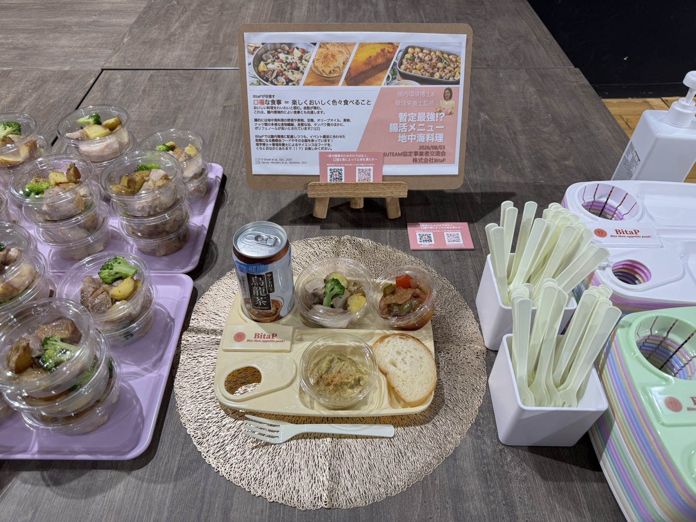
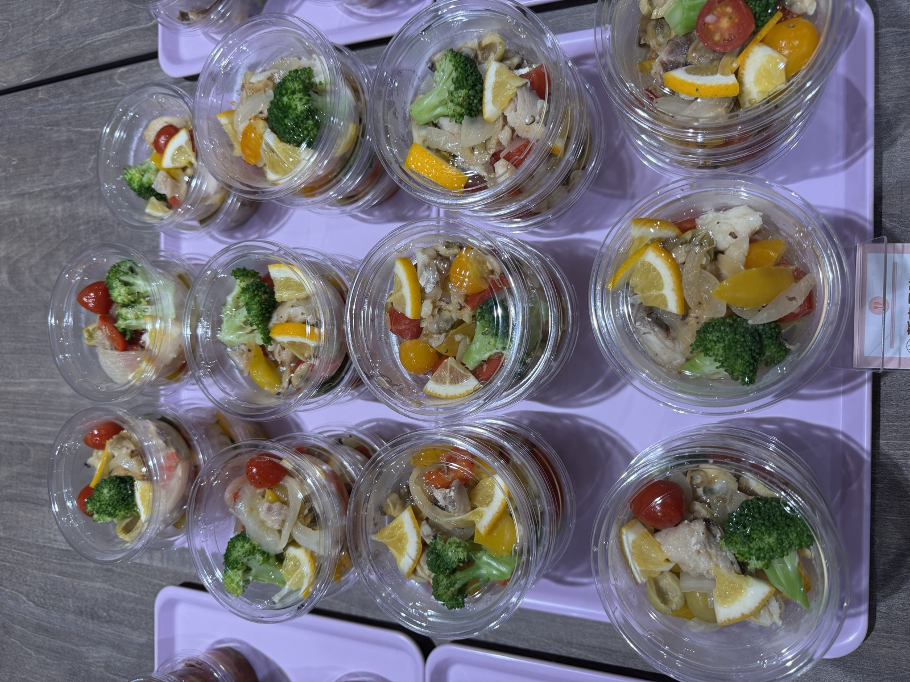
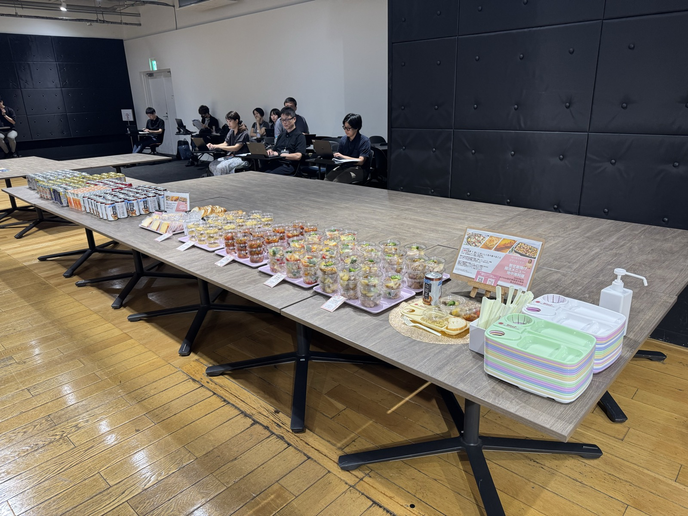
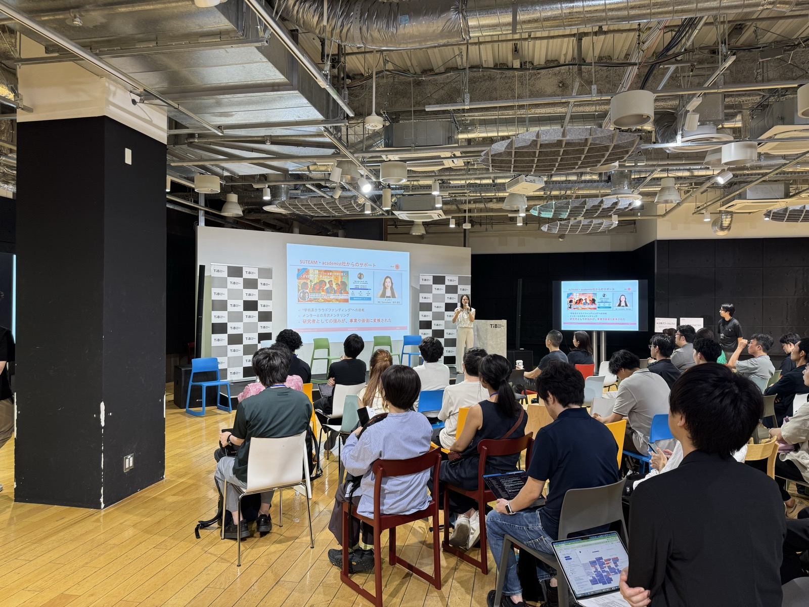

2026/08/03
【登壇情報】【事業事例】SUTEAM協定事業者交流会で登壇し、地中海料理のケータリングを提供しました
2026年8月3日、株式会社BitaPは、東京都のスタートアップ支援プログラム「Tokyo SUTEAM」の協定事業者交流会において、懇親会のフード提供の企画を担当いたしました。会場はTokyo Innovation Base（TiB／有楽町）です。
当日は、スタートアップ支援に取り組む協定事業者約40社が集まり、支援の実践や連携の可能性について交流が行われました。
【要確認】参加人数（過去記事では「約50名」「約70名」のように人数で書いています）
BitaPは、腸内細菌研究で注目される地中海料理をテーマに、メニュー企画・ケータリング手配・ポップ制作・当日運営サポートを一貫して行いました。あわせて代表の千葉が登壇し、SUTEAMおよびacademist社からの支援をどのように活用したかを報告しました。
【登壇内容】
【要確認】登壇の正式なテーマ名
支援を受けた事業者の立場から、次の3点についてお話ししました。
⚫︎学術系クラウドファンディングへの挑戦
⚫︎メンターとの月次メンタリング
⚫︎研究者としての強みが、事業や価値に変換されたこと
【当日のフードテーマ】
「暫定最強!? 腸活メニュー：地中海料理」
地中海料理には多様な野菜や果物、豆類、オリーブオイル、ナッツ類が使われており、食物繊維、良質な油、タンパク質に加えてポリフェノールを摂れる点が、腸内環境にとって良いとされています。（T S Ghosh et al., Gut, 2020／C Garcia–Montero et al., Nutrients, 2021）
おいしい料理をわいわいと囲み、会話が弾む。BitaPが目指す「口福な食事＝楽しくおいしく色々食べること」は、腸内環境的によい食事とも共通します。
【当日のフードメニュー】
⚫︎鶏ももと新じゃがのハーブロースト
鶏肉をフレッシュのローズマリーやタイムなどのハーブに一晩漬け込み、オーブンでじっくり焼き上げました。付け合わせのジャガイモも、鶏肉とは時間を変えてゆっくりとオーブンでローストしています。
⚫︎暫定最強腸活：アクアパッツア
魚介の旨みをたっぷり引き出し、さまざまな野菜と一緒にやさしく煮込みました。
⚫︎ひよこ豆のスパイシーフムス＋小麦からこだわったバゲット
豆の食感を少し残しながら、練りごまとフレッシュレモンで食べやすく仕上げました。パンは店主が粉から拘り、添加物を使わずに焼き上げたものです。
⚫︎まるごと金柑のパウンドケーキ
金柑を丸ごと甘露煮にしてから生地に合わせ、しっとり焼き上げました。
【料理作成】
Aun Kitchen（https://aun-kitchen.com/）
【要確認】イベント主催・ご担当者様からのコメント（まだ頂いていないとのことなので、頂けたらここに入れます）
腸内環境によい食とは単一の食材を食べ続けることではなく、多品目の食材をバランスよく食べ、それを継続することです。そのような食事は、ついつい箸が進む「口福」な食事といえます。
今後もBitaPは、「健康なだけではなく、口福な食事」を目指した事業を展開してまいります！
BitaPのケータリングにご関心のある方は以下よりぜひご連絡ください。
お問い合わせフォーム → https://forms.gle/QPHj2dkgMYtEogHS8



